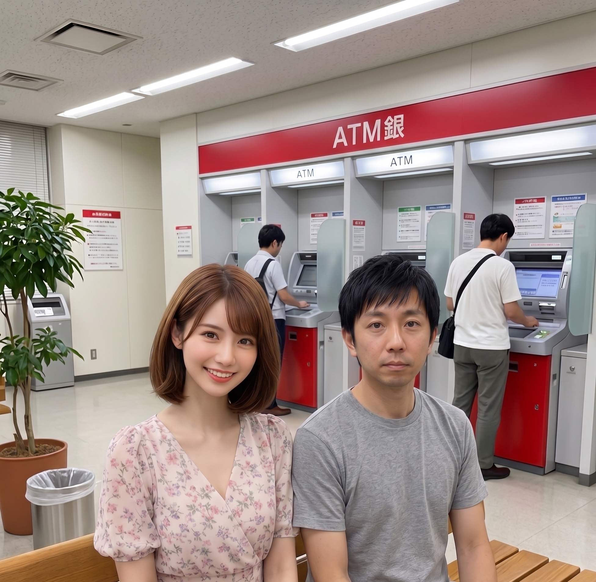

登場人物

美咲（みさき）
女子大生。就活のエントリーシートの資格欄が真っ白なことに気づき、慌ててITパスポートの勉強を開始。ITは完全に素人。高校時代は可愛くて人気者だったので、ちょっとプライドが高い。素直じゃない。

拓也（たくや）
美咲の高校時代の同級生。東京大学工学部。子どもの頃からパソコンばかりいじってきた生粋のオタク。実は美咲のことが好きだが、10年近く言い出せていない。教えるのは得意だが、口が悪いのが玉に瑕。

今日の問題
今日の問題
クレジットカードの会員データを安全に取り扱うことを目的として策定された、クレジットカード情報の保護に関するセキュリティ基準はどれか。
- アNFC
- イPCI DSS
- ウPCI Express
- エRFID
第1幕：銀行の待合スペースで
銀行のATMコーナー近く、待合用のベンチ。美咲が順番待ちの番号札を握りしめて座っている。隣に拓也がやってくる。

拓也
わざわざ銀行まで呼び出すなんて、珍しいね

美咲
初めてクレジットカード作ろうと思って、申込書出しに来たのよ。番号呼ばれるまで暇だったから、ついでに勉強しようかと
拓也
準備いいね。……あ、その申込書のパンフレット、ちょっと見せて
美咲が渡したパンフレットの隅に、小さく「当行はPCI DSSに準拠しています」の一文。

美咲
これ、さっきから気になってたのよね。この『PCI』ってやつ
拓也
お、ちょうどいいや。それ、今日の問題にまるまる出てくる単語だよ

美咲
え、ほんとに？ 銀行のパンフレットの単語が試験に出るの？
拓也
出るよ。しかも、けっこう紛らわしいひっかけがある問題だから、気を抜けないよ
第2幕：PCIって聞くと、パソコンのアレでしょ

美咲
じゃあ答えるわね。『PCI』って書いてあるくらいだから、これウ PCI Expressでしょ
拓也
お、なんでそう思った？
美咲
だって、あんたが前にパソコンの中身見せてくれたとき、グラフィックボード挿す端子のところで『PCI Express』って言ってたじゃない。それしか『PCI』って単語、聞いたことなかったから
拓也
よく覚えてたね……。でも、それ、まさに問題が仕掛けてるひっかけそのものなんだ
美咲
え、ひっかけ？
拓也
うん。PCI DSSとPCI Expressは、"PCI"って文字が共通してるだけで、中身は完全に別物なんだ
美咲
同じ略語が別のところで使い回されてるってこと？ 紛らわしいわね……
拓也
ITの世界、こういう名前だけ似てる別概念、本当に多いんだよね。惑わされないコツを、今から一緒に見ていこう
第3幕：レストランの保健所基準

拓也
まず、正解から言うね。イ PCI DSS
美咲
ぴーしーあい・でぃーえすえす？ なにその長い名前
拓也
Payment Card Industry Data Security Standardの略。日本語にすると『クレジットカード業界のデータセキュリティ基準』
美咲
基準……。じゃあ、なにかの技術の名前じゃないの？
拓也
そう、そこがポイント。PCI DSSは、特定の技術じゃなくて"ルールブック一式"なんだ。たとえ話するね。レストランが保健所からもらう衛生基準をイメージして
美咲
衛生基準？
拓也
うん。『冷蔵庫の温度は何度以下にする』『調理器具はこう消毒する』『従業員は手洗いをこう徹底する』……みたいな、お店が守るべきルールが何十項目もまとめられてるでしょ
美咲
あ、たしかに。保健所の検査でチェックされるやつね
拓也
PCI DSSも同じ発想で、クレジットカード情報を扱うお店やサービスが、"カード情報をこう暗号化しなさい""アクセスできる人をこう制限しなさい""定期的にこうチェックしなさい"、みたいなルールを何十項目もまとめた基準なんだ
美咲
じゃあ、この銀行が『PCI DSSに準拠』って書いてるのは……
拓也
『うちはこのルールブック、ちゃんと全部守ってますよ』っていう宣言、ってこと
美咲
……あー！ そういうことか！ "技術の名前"じゃなくて、"守るべき決まりごとのセット"だったのね。PCI Expressみたいな、パーツの規格とは全然レベルが違う話だったんだ
拓也
完璧な理解。PCI Expressはパソコンの中の部品をつなぐ規格、PCI DSSはカード情報を扱う組織が守るべきルールの集まり。カテゴリーからして別物なんだよ
第4幕：拓也、計画表を渡してくる
拓也
よし、じゃあセキュリティ基準の話が出たところで、今後の勉強、もっと体系的にやったほうがいいと思うんだよね
美咲
体系的に？
拓也がリュックから、几帳面な字でびっしり書き込まれたノートを取り出す。表紙には『美咲さん学習計画（全12週）』の文字。
美咲
……なにこれ
拓也
今までの内容を整理して、今後どの分野をどの順番でやるといいか、週ごとにまとめてみた。ストラテジ系、マネジメント系、テクノロジ系のバランスも考えて――
美咲
ちょっと待って、これ、いつの間に作ったのよ
拓也
昨日の夜、ちょっと気になって……。美咲のペースだと、この分野が手薄になりそうだから、先に潰しておいたほうがいいかなと思って
美咲
……気持ちはありがたいけど、勝手に私の勉強の段取り、全部決めないでくれる？

拓也
え、迷惑だった……？
美咲
迷惑とまでは言わないけど、こっちにも自分のペースってものがあるの。次はこれ、その次はこれ、って全部先回りで決められると、なんか流れ作業やらされてる気分になるのよ

拓也
……たしかに、そうだよね。ごめん、テンション上がって突っ走った
美咲
計画表作る前に、一言『こういうのどう？』って聞きなさいよ
拓也
以後、気をつけます

美咲
……ふん。まあ、ノート自体はよくできてるから、参考程度にもらっとくけど
第5幕：残りの選択肢を片付ける
拓也
気を取り直して、残りのアとエね
美咲
アは『NFC』……これ、前にSuicaの話で出てきたやつよね
拓也
よく覚えてたね。近距離無線通信の技術で、数センチしか届かないから安全、っていう話だった。でも、これは通信の技術であって、カード情報を守るための"基準"とは別物
美咲
じゃあエの『RFID』は？
拓也
RFIDは無線タグを使って、モノを識別する技術。ICタグをかざすだけで在庫管理ができたりするやつ。NFCと近い技術ではあるんだけど、これも基準じゃなくて技術だから、今回の答えにはならない
美咲
なるほど……アとエは"技術"、ウは"別のジャンルの規格"、イだけが"ルールブック"。全部カテゴリーが違うのね
拓也
そのとおり。この問題、実は4つとも似たような響きなのに、全部違うレイヤーの話っていう、けっこう凝ったひっかけ構成になってるんだ
美咲
油断も隙もないわね、この試験
問題文（再掲）
クレジットカードの会員データを安全に取り扱うことを目的として策定された、クレジットカード情報の保護に関するセキュリティ基準はどれか。
- アNFC
- イPCI DSS
- ウPCI Express
- エRFID
まとめ：選択肢ごとの答え合わせ
| 選択肢 | 用語 | 正体 | 正誤 |
|---|---|---|---|
| ア | NFC | 近距離無線通信の技術 | 不正解（技術であり基準ではない） |
| イ | PCI DSS | クレジットカード情報保護のためのセキュリティ基準 | 正解 |
| ウ | PCI Express | パソコンの拡張スロットの規格（名前が似ているだけの別物） | 不正解 |
| エ | RFID | 無線タグによる個体識別技術 | 不正解（技術であり基準ではない） |
答えイ PCI DSS
PR
動画でも体系的に学びたい人は、資格対策のオンライン学習サービス「オンスク.jp」もおすすめです。スキマ時間でサクッと学べます。
覚え方のコツ
PCI DSSは、技術じゃなくて"ルールブック"。
- PCI DSS＝クレジットカード情報を扱う組織が守るべき基準の集まり（暗号化・アクセス制限・監査など）
- PCI Expressは名前が似てるだけの別ジャンルの規格（パソコンの拡張スロット）
- NFC・RFIDは技術そのものであって、基準（ルール）ではない
拓也
『PCI』って文字が出てきたら、まずDSS（基準）なのかExpress（規格）なのかを見分ける癖をつけるといいよ。似た略語ほど、"何のジャンルの話か"で区別するのがコツ
美咲
保健所の基準とパソコンの部品、比べたら全然違うジャンルだもんね
おまけ：なぜPCI DSSが必要なの？
拓也
クレジットカード情報が漏れると、不正利用の被害が一気に広がるでしょ。だから、カード会社や加盟店、決済代行会社がバラバラのセキュリティレベルで運用してたら危ないんだ。そこで業界全体で『最低限これは守ってね』っていう共通ルールを作ったのがPCI DSS
美咲
じゃあ、ネットで買い物するときも、このマークとか表記があるお店なら安心ってこと？
拓也
絶対とまでは言えないけど、信頼できるかどうかの目安の一つにはなるよ。カード情報を入力する画面が出てきたら、こういう基準を意識してるお店かどうか、ちょっと気にしてみるといいかも
エピローグ
番号札の表示が「042」になり、美咲がベンチから立ち上がる。
美咲
あ、私の番号だ。行ってくる
拓也
うん、いってらっしゃい
美咲
……終わったらまた戻ってくるから、待ってて。学習計画表の続き、聞かせてよ
拓也
え、聞いてくれるの？ さっき怒ってたのに

美咲
怒ってないわよ。勝手に決められるのが嫌なだけで、内容自体はちゃんとしてるって言ったでしょ
拓也
……うん。じゃあ、ちゃんと相談しながら進めよう
美咲
そうしなさい。あんたの計画表、悪くはないんだから、ちゃんと"共同作業"にしなさいよ
拓也心の声
共同作業、か。それ、なんかいいな
美咲
なに、にやけてるのよ
拓也
いや、なんでもない。行っておいで、番号呼ばれてるよ
美咲
うん、すぐ戻る
今日のポイントおさらい
- PCI DSS＝クレジットカード情報を保護するための業界共通のセキュリティ基準
- PCI DSSは特定の技術ではなく、暗号化・アクセス制限・監査など複数のルールをまとめたもの
- PCI Expressは名前が似ているだけの、パソコンの拡張スロットの規格（別ジャンル）
- NFC・RFIDは技術そのものであり、セキュリティ"基準"ではない
- 似た略語が出てきたら、"技術"なのか"規格"なのか"基準"なのか、カテゴリーを見分ける
次回もお楽しみに。
この記事はITパスポート試験 令和3年度 問61（テクノロジ系／セキュリティ）の解説です。